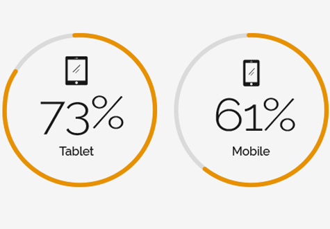

The Goals
Develop an Themed-Bookstore experience that centred around Jin-Yong's novels ambience. Aimed to user-centred approached that was fulfilling novels lover reading habit, and building relationships between martial arts novels and audiences deeply.
This was an individual project started from my design challenge and own experience. His novels helped people inspire their fantasies in mind, including me. So I’m going to share the process I went through MVP methodology to focus on key deliverables.
Overview of the Issue
Existing Jin Yong's novels reader app were not portraying value and proper experience
Dr. Jin Yong's is legends of martial arts novel. His works is fantasy and iconic. Most readers expressed their love for his works. Typically, A people reads a novel takes long times. However, people nowdays it's not easy to make time for reading. Those readers has "Enjoy" novels extremly and spend over 3 hour average. They needs frequently action of scrolling swipe down or left during the reading on mobile screen, in which caused unsmoothly reads journey also.
What's Design Challenge
"How might we make Jin-Yong's novels readers to be controllable in a way to keep track of time that they’re read flexible? while conveying the reading experience more comfortably and valuable??"
Research and Empathize
Knowing the Novel Readers
Kicking off, I started my research by understanding the problem I’m trying to solve. I planned a quick study with 8 people who reads novel within the target audience, all of whom had experienced before and try to get their thoughts. Asked them questions via Facebook Jin-Yong's novels fans group voting:
Plus, I assigned some simple tasks to 2 people to see how they would personally use it and identify reading issue.
- in-App Reading
- Check Reading status and History
- Time Spending
Finding out Pain Points & Analysis
Next, I compiled all the feedback, Play Store review and testing result listed above and grouped similar are. The major pattern discovered over 80% of Jin Yong's avid readers, while other 20% are infrequently to read most of the times. From this, I summarized four pain points. which are about:
tune
Insufficient of
in-App reading feature
Over 75% frustrated with limited reading status. Most user said: "It just simply save those pages". Only a page bookmark feature that caused inconvenience due to long period reading especially.
Takeaway :
Exsiting app doesn't fullfill reader situation and behaviour. They mostly spend up to over 1.5 hour on novels. Unsure how many time spend on novel reads. So, they wish to more control over reading time.
mobile_off
Uncomfortable
on mobile reading
Over 60% audiences dislike read novel through mobile, they need much scrolling and swiping on the screen frequently, and also said loss concentration during reading period they felt. Observed among some major users prefer to hard-copy and Amazon Kindle reading at home.
Takeaway :
Despite mobile usage widely, but mobile screen doesn't match up with thier reading behavior, which means small screen not ideal for read text-heavy martial arts novel, and cause eye strain occurs in concentration reads also.
mood_bad
Unattractive Interface
Over 40% audiences feels bored: "Ugly", “It doesn't interest me”, "Seem like reads article", especially avid novel readers.
Takeaway :
Such a pure of text e-Reader had made thier disappointed which would just turn off the readers interest. Current apps UI was not up to marks as imagery of Jin Yong's novels.
menu_book
Lack of Book genres
As most audience mentioned haven't Jin-Yong's relevant and other categoies at all.
Takeaway :
They ending up chose either which of hard-copy version or online ebook store. Might with chance loss of potential audience opportunity.
Knowing the Competitors
By quick testing of the competitive on the market which gave me current app patterns and which feature have. Majority of competitior was lack of a detailed information about the reads activities, and novels chapter illustration where i carried out on similar e-Reader testing. The main differences that i noticed were.
Defining what's Problem Address
Identifying the Design Goals
Next, I translated users pain point into goals to establish clear boundaries what need to be addressed with.
[User ]
People who frequently reads Jin Yong's Novel
[Goals ]
Reading Feature :
Reading Behavior :
Emotional :
Defining what's Problem Address
Identifying the Design Goals
Next, I translated users pain point into goals to establish clear boundaries what need to be addressed with.
[User ] People who frequently reads Jin Yong's Novel, So I Need...
Feature
Behavior
Emotional
Defining the Design Framework
Hypothesis
Below, I proceed by explaining two hypothesis base on the key insights and research, that can serve as the basic throughout my design strategy. With this, can be further explored solutions through framework.
Hypothesis #1
Every novel readers needs a exact status reading
"Designing for a reader who would spend hours immersed in the novels app"
INSIGHTS :
Most people who trend to multi-task nowadays, it's reasonable to assum that readers would want to do other activities like playing games or somewhat on social media while reading. Just a page number bookmarking option can be demotivating thier reading efficiency. So, They valued a tracable of detail what is reads on. Below are the key findings arcoss the research before :
Average time spent on novels:
1 h
40 m
Average time finish novels :
12
Days
Hypothesis #2
Tablet-first as Primary Reading Platform
"Fulfilling their need to reads fluently and comfortably"
WHY :
Jin Yong's novels is a text-heavy fiction. Novel readers would not be rush to reading, because it isn't online article or news. Typically, Mobile not suitable for long-form novel reads. Would not solve the problem even users enlarge font size because mobile screen size was fixed, only causing more scrolling frequently. Detail
INSIGHTS :
Tablet landscape screen almost same as hard-copy size that well-adapted Z-pattern for human reading. Detail Across those interviewed, they preferred to reading novels with hard-copy and kindle at most, and would like to stay home to maintain motivation during long period reading. That’s why tablet trend to student learning. Of course, that could be loss mobile user base engaging. Below are the point that supports the "Tablet-first" assumptions i analysed :
Most words of novel "天龍八部" :
+1.5
million
Average times of novel reads:
2-3
times
Reading devices for in-depth reading :
Tablet users often reading full long-form e-book :
Hypothesis Statement
"We believe that if we provide more informative of reading status which helps to easy to make time for long period reading efficiency. In the meantime, but It is crucial to make audience experiences comfortable and fluently when reading on tablet screen. [ Solution ]
Will achieve overall Customer Satisfaction (CSAT) metrics by 50% [ Success metrics ]
This is because novels reader tend to know suitable time before actually reads. Due to mobile screen limitations, reading on a tablet is just as comfortable as reading a printed version novel, and especially a ton of words novels.” [ Evidences ]
Storyboard
Persona "MAX" who is Novel Lover
I setup primary persona - MAX, to capture the roadmap of our target users describe how a user might think, do and feel about a certain situation.
User Journey :
MAX as a busy Media Writer in middle-class, valued his time and work life balance. Due to his constant need of writing skill and idea, He love reading. He contemplates what to read something while busy in works after.
However, With about 2 hour left before sleeping. Before starting reading, he looking through the reading prcoess bar and system evaluate time first, and make decision how much time available to reading, MAX feels helpfull~ so that he can spend time for family and somewhat things in home. Due to the reading on iPad, he feels it comfortable and perfextly fits. So, He can better enjoy the reading time after long day at work.
Ideating the Strategy
Proposed Solution
Transform e-book reader into Jin-Yong's Theme-Bookstore
Through reconstructe the reading experience rather than pure of text e-reader, and giving novels readers multiple levels of imagery and valuable, where differentiate from competitors in the market. Plus, Developing a Tablet as primary platform where wide screen not only concentrate as well as reading deeply.
#1
Reinforces in-App reading feature
Providing more informative of novels activities that include current reading, charpter info/page, previous on reads status and evaluate time for next reading. To do so, users can evaluate that the time spent to finish a novel themselves. Users will be given time aspects control over reading period.
Apply suitable color scheme for long period reads that provides the best legibility to reduce eye-stress with text. During the research phase previoulsy, there's no such app that is providing this option for users.
#2
Connect novel reader to build closer relationships
Having categories of about the Jin-Yong's were, such as Jin Studies research (金學) & martial arts relevant book at the Theme-bookstore given opportunity achieve to a broader user group.
Utilizing novels visual element arcoss the whole UI to enhance ambience of Jin-Yong-themed bookstore, especially presented in Jin-Yong's works was important.
Creating value-added content that about the well-known characters and martial arts which allow user interact with. Make it more memorable experience.
Concept Sketching
Here, I validate the concept and big picture before i cam up with my solution. I started key idea sketching about 4 screens in minds on a paper. Base on limited resources, I don’t spend any time thinking too much about the Hi-fi wireframes.
User Flow
As I previously mentioned, which is establishing of a themed-bookstore not being redesign of ebook reader. So, I created user flow that walk me through with a roadmap to base designing user journey.
Crafting the Visual
Design System
Whole stage belongs to Jin-Yong's novels element. Here, I outlined 2 keywords: "Originality" and "Iconic". These are necessary elements of the novels, which ideating to design App logo also.
Overall UI design is simple and emotional to establish a connection. Since the pages are going to be filled with many book covers, it is ideal to keep the app colors as minimal as possible. A light bit yellow as background colors while wine red as accent colors. Besides, I've also customize four set of book mockup and a unique vector calligraphy element as well. It make the message and interactions clealy.


Digital Illustration
Personally, I am impressed with the infinite possibilities that Jin-Yong’s novels offer. So, I did spend time thinking too much about the visual, but I knew it was worth the time. I decided to create something which idea from the novels and imbue them with my own feelings. For this purpose, I created martial arts and storyline of novels illustration as innovative visual elements and help users feel more connected.


Implementating the Solution
Prototypes
The design solution is that it connect directly to the Jin-Yong's audiences, I ran few rounds with 2 participants (who same people interviewed) of user testings. Several usability issue revises are made accordingly that would result in smoothly reading. Here are final prototyping how I tried achieving the goals set above through this solution.
A Legend of Martial Arts Literature
Bringing novel audiences together in meaningful experiences!
play_circle_filledClick on image to Play / Paused demo
The reimagined Jin-Yong’s Themed-Bookstore
A Themed-Bookstore brings freshness experience with infinite-loop posterboard design landing. I deliberately martial arts illustration as entry page to relate to their respective section, which can also allows to keep readers interested through the entire navigation that evoke emotions immediately. Detail
In "Bookstore" page, With genres slider to scroll through that displays different books where divided into 3 category that shows :《細讀巨匠》 Jin-Yong’s Novels Collections, 《江湖以外》 Novels reference book and 《論盡金學》 Jin Studies research book. Detail
Designing for long-form novel reads
In "My Bookshelf" where shows overview of novel. With status bar in current novel section. User can keep track novel reading status that contain: Current reading, Percentage of pages reads, Previous on reads, Evaluate time reading, Last reading time, and Chapter/Pages detail which clearly to given aspects of time control to users before reading so that they were more flexible. Detail
Reading on Tablet
As prototyping shown, the Tablet-first approach was smoothly and comfortable reading with wide screen same as hard-copy size, which is feel less cramped as well as better for long-form novel reads. Detail Novels illustrations between the chapter was reserved that keep reader feel "Real" also. Detail
Color scheme ease for eyes
"Eye protect mode" as new featue with a specific for reading long period. A background color value as #f4f4ec and gray font as #333, with a bit emboss paper texture same as printed version. This combination of color scheme was give out a soft and natural. It would have been useful to less of a stimulating effect on our eyes. That provides natural contrast and readability for body text. Detail
Credit: The color scheme according to "Luz Rello - Bigham Human-Computer Interaction Institute & Carnegie Mellon University"
Enhanced Reader interface
In user preference setting panel, With quick access page button what page shown while users swiping. Moreover, There are variety of option which is customize option to suit users reading behavior, such as font face, size, colors, night mode, page turn interactions and bookmarks with auto-saving the currently etc. Detail
More engage audience by novels value-added content
As prototyping shown, This new section contains Jin-Yong’s novels well-known characters, variety of martial arts knowledge allow users interact with. These give the user fun experience more rewarding so that better conveys of Jin-Yong’s theme-bookstore image, and learn more about the Jin-Yong’s novels behind it. Detail
MVP Validating
Usability Testing
I conducted with 4 participants (who experience in novel e-Reader) testing the working prototype and rate on a five-point scale ( 1: Very unsatisfied and 5: Very satisfied). Here are the feedback:
In-App reading feature for long-form novel
Satisfy
person person person person
Feedback: "I could keep track my status and history, make me aware use of time and effort when i was reading"; "Its delightful"
Run on Tablet Reading Platform
Satisfy
person person person person
Feedback: "Well-fitted long-form novel really, I think I’ll use tablet reads novels further"; "Its reads smoothly, better than mobile, I would recommend to Jin-Yong’s fans"
Jin-Yong’s Theme-Bookstore Strategy
Satisfy
person person person person
Feedback: "Really catchy novels grahics get my attention"; "Kung fu content interesting, like a Jin-Yong’s portal"
Overall Customer Satisfaction Rate (CSAT):
66%
Takeaway
This project an MVP solution, I looking back on the whole project was very fun, challenging. I hope Jin-Yong's Theme-bookstore novel app that brings something different to the market. This project forced me to try a bold solution for Jin-Yong's works. I feel it allowed me to push my creativity and passion for design. Believes that would be no boundaries between users and their reading experiences.


{kind=link}
{kind=link}
{kind=link}
{kind=link}
{kind=link}
{kind=link}
{kind=link}
{kind=link}
{kind=link}
{kind=link}